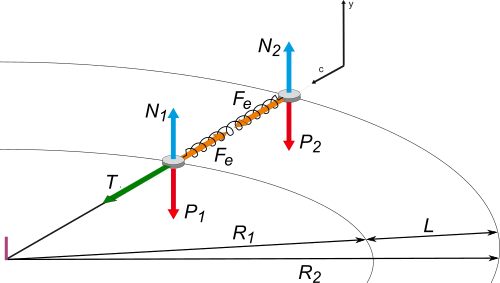

NO ME SALEN
PROBLEMAS RESUELTOS DE FÍSICA DEL CBC
|
|

|
F d5.13 - Dos cuerpos de 100 g cada uno se encuentran sobre una mesa horizontal sin rozamiento, unidos por un resorte de 25 cm de longitud natural. Uno de ellos se encuentra atado a un hilo de 50 cm de longitud, fijo a la mesa en un solo extremo. El conjunto gira alrededor del extremo fijo del hilo con una velocidad angular constante de 4 1/s. En esas condiciones el cuerpo más alejado del centro tiene un radio de giro de 0,9 m.
a. Dibuja las fuerzas sobre ambos cuerpos.
b. Calcula la constante elástica del resorte a partir del planteo de las leyes de Newton.
c. Calcula la intensidad de la fuerza que experimenta el hilo.
|
Lamentablemente el enunciado no se acompaña con un esquema de la situación... pero si lo leés con detenimiento encontrarás que es suficientemente preciso y sin ambigüedades, y vos podés reconstruir un esquema de lo que ocurre.
Acá lo tenés. Y es tan sencillo que nos sirve para realizar los diagramas de cuerpo libre de cada uno de los cuerpos. |
|
|
|  |
Al que gira en la parte interior lo llamé 1 y al otro 2.
Sobre la masa 1 actúa hacia adentro la fuerza que realiza el hilo, T, y hacia afuera la fuerza elástica, Fe.
Sobre la masa 2, solo la fuerza elástica que, como suponemos que se trata de un resorte ideal, realiza la misma fuerza en ambos extremos y la podemos llamar, nuevamente, Fe.
También actúan, sobre ambos cuerpos, las fuerzas verticales peso y apoyo que, en este ejercicio no aportan nada sustancial a la solución y se cancelan entre sí. |
|
Con esto nos vamos a Newton:
T — Fe = m1 . a1
Fe = m2 . a2
Es un error bastante común ovidar que ambos cuerpos tienen diferentes aceleraciones. Vos no lo cometas. Por otro lado esas aceleraciones vamos a expresarlas en función de la velocidad angular... que sí es la misma para ambos cuerpos. Era así: a = ω² . R
Pero los radios de ambos cuerpos son diferentes...
a1 = ω² . R1 = (4 s-1)² . 0,5 m = 8 m/s²
a2 = ω² . R2 = (4 s-1)² . 0,9 m = 14,4 m/s²
Con la aceleracióndel cuerpo 2 podemos ir directo a su ecuación de Newton y obtener el valor de la ferza elástica:
Fe = m2 . a2 = 0,1 kg . 14,4 m/s² = 1,44 N
Recordando la ley de Hooke, Fe = k ΔL, y razonando que el estiramiento del resorte vale 0,15 m (la longitud que tiene mientras gira, menos la longitud natural), podemos hallar el valor de su constante. |
|
|
|
|
|
Y si vamos a la ecuación de Newton del cuerpo 1, podemos hallar el valor de la tensión.
T = m1 . a1 + Fe = 0,1 kg . 8 m/s² + 1,44 N
|
|
|
|
|
|
|
| |
| DESAFIO: |
|
 |
| |
| Algunos derechos reservados.
Se permite su reproducción citando la fuente. Última actualización jun-21. Buenos Aires, Argentina. |
|
|
|